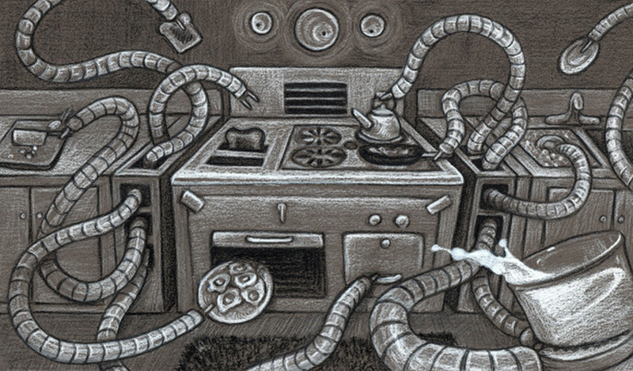
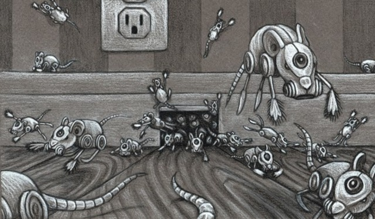
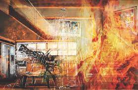

In the living room the voice-clock sang, Tick-tock, seven o'clock, time to get up, time to get up, seven o'clock! as if it were afraid nobody would. The morning house lay empty. The clock ticked on, repeating and repeating its sounds into the emptiness. Seven-nine, breakfast time, seven-nine!
In the kitchen the breakfast stove gave a hissing sigh and ejected from its warm interior eight pieces of perfectly browned toast, eight eggs sunnyside up, sixteen slices of bacon, two coffees, and two cool glasses of milk
"Today is August 4, 2026," said a second voice from the kitchen ceiling., "in the city of Allendale, California." It repeated the date three times for memory's sake. "Today is Mr. Featherstone's birthday. Today is the anniversary of Tilita's marriage. Insurance is payable, as are the water, gas, and light bills."
Somewhere in the walls, relays clicked, memory tapes glided under electric eyes.
Eight-one, tick-tock, eight-one o'clock, off to school, off to work, run, run, eight-one But no doors slammed, no carpets took the soft tread of rubber heels. It was raining outside. The weather box on the fron door sang quietly: "Rain, rain, go away; rubbers, raincoats for today..." And the rain tapped on the empty house, echoing.
Outside, the garage chimed and lifted its door to reveal the waiting car. After a long wait the door swung down again.
At eight-thirty the eggs were shriveled and the toast was like stone. An aluminum wedge scraped them down a metal throat which digested and flushed them away to the distant sea. The dirty dishes were dropped into a hot washer and emerged twinkling dry.
Nine-fifteen, sang the clock, time to clean.
Out of warrens in the wall, tiny robot mice darted. The rooms were a crawl with the small cleaning animals, all rubber and metal. They thudded against chairs, whirling their mustached runners, kneading the rug nap, sucking gently at hidden dust. Then, like mysterious invaders, they popped into their burrows. Their pink electric eye faded. The house was clean.
Ten o'clock. The sun came out from behind the rain. The house stood alone in a city of rubble and ashes. This was the one house left standing. At night the ruined city gave of a radioactive glow which could be seen for miles.
Ten-fifteen. The garden sprinklers whirled up in golden founts, filling the soft morning air with scatterings of brightness. The water pelted windowpanes, running down the charred west side where the house had been burned evenly free of its white paint. The entire west face of the house was black, save for five places. Here the silhouette in paint of a man mowing a lawn. Here, as in a photograph, a woman bent to pick flowers. Still farther over, their images burned on wood in one titantic instant, a small boy, hands flung into the air; higher up, the image of thrown ball, and opposite him a girl, hand raised to catch a ball which never came down.
The five spots of paint- the man, the woman, the children, the ball - remained. The rest was a thin charcoaled layer.
The gentle sprinkler rain filled the garden with falling light.
Until this day, how well the house had kept its peace. How carefully it had inquired, 'Who goes there? What's the password?" and, getting no answer from lonely foxes and whining cats, it had shut up its windows and drawn shades in an old-maidenly preoccupation with self-protection which bordered on a mechanical paranoia.
It quivered at each sound, the house did. If a sparrow brushed a window, the shade snapped up. The bird, startled, flew off! No, not even a bird must touch the house!
The house was an altar with ten thousand attendants, big, small, servicing, attending, in choirs. But the gods had gone away, and the ritual of the religion continued senselessly, uselessly.
Twelve noon.
A dog whined, shivering, on the front porch.
The front door recognized the dog voice and opened. The dog, once large and fleshy, but now gone to bone and covered with sores, moved in and through the house, tracking mud. Behind it whirred angry mice, angry at having to pick up mud, angry at inconvenience.
For not a leaf fragment blew under the door but what the wall panels flipped open and the copper scrap rats flashed swiftly out. The offending dust, hair, or paper, seized in miniature steel jaws, was raced back to the burrows. There, down tubes which fed into the cellar, it was dropped like evil Baal in a dark corner.
The dog ran upstairs, hysterically yelping to each door, at last realizing, as the house realized, that only silence was here.
It sniffed the air and scratched the kitchen door. Behind the door, the stove was making pancakes which filled the house with a rich odor and the scent of maple syrup.
The dog frothed at the mouth, lying at the door, sniffing, its eyes turned to fire. It ran wildly in circles, biting at its tail, spun in a frenzy, and died. It lay in the parlor for an hour.
Two 'clock, sang a voice.
Delicately sensing decay at last, the regiments of mice hummed out as softly as blown gray leaves in an electrical wind.
Two-fifteen.
The dog was gone.
In the cellar, the incinerator glowed suddenly and a whirl of sparks leaped up the chimney.
Two thirty-five.
Bridge tables sprouted from patio walls. Playing cards fluttered onto pads in a shower of pips. Martinis manifested on an oaken bench with egg salad sandwiches. Music played.
But the tables were silent and the cards untouched.
At four o'clock the tables folded like great butterflies back through the paneled walls.
Four-thirty.
The nursery walls glowed.
Animals took shape: yellow giraffes, blue lions, pink antelopes, lilac panthers cavorting in crystal substance. The walls were glass. They looked out upon color and fantasy. Hidden films clocked though the well-oiled sprockets, and the walls lived. The nursery floor was woven to resemble a crisp cereal meadow. Over this ran aluminum roaches and iron crickets, and in the hot still air butterflies of delicate red tissue wavered among the sharp aroma of animal spoors! There was the sound like a great matted yellow hive of bees within a dark bellows, the lazy bumble of a purring lion. And there was the patter of okapi feet and the murmur of a fresh jungle rain, like other hoofs falling upon the summer-starched grass. Now the walls dissolved into distances of parched weed, mile on mile, and warm endless sky. The animals drew away into thorn brakes and water holes.It was the children's hour.
Five o'clock. The bath filled with clear hot water.
Six, seven, eight o'clock. The dinner dishes manipulated like magic tricks, and in the study a click. In the metal stand opposite the hearth where a fire now blazed up warmly, a cigar popped out, half an inch of soft gray ash on it, smoking, waiting.
Nine o'clock. The beds warmed their hidden circuits, for nights were cool here.
Nine-five. A voice spoke from the study ceiling: "Mrs. McClellan, which poem would you like this evening?" The house was silent.
The voice said at last, "Since you express no preference, I shall select a poem at random." Quiet music rose to back the voice. "Sara Teasdale. As I recall, your favorite...
"There will come soft rains and the smell of the ground, And swallows circling with their shimmering sound;
And frogs in the pools singing at night, And wild plum trees in tremulous white;
Robins will wear their feathery fire, Whistling their whims on a low fence-wire;
And not one will know of the war, not one Will care at last when it is done.
Not one would mind, neither bird nor tree, If mankind perished utterly;
And Spring herself, when she woke at dawn Would scarcely know that we were gone."
The fire burned on the stone hearth and the cigar fell away into a mound of quiet ash on its tray. The empty chairs faced each other between the silent walls, and the music played.
At ten o'clock the house began to die.
The wind blew. A falling tree bough crashed through the kitchen window. Cleaning solvent, bottled, shattered over the stove. The room was ablaze in an instant!
"Fire!" screamed a voice. The house lights flashed, water pumps shot water from the ceilings. But the solvent spread on the linoleum, licking, eating, under the kitchen door, while the voices took it up in chorus: "Fire, fire, fire!"
The house tried to save itself. Doors sprang tightly shut, but the windows were broken by the heat and the wind blew and sucked upon the fire.
The house gave ground as the fire in ten billion angry sparks moved with flaming ease from room to room and then up the stairs. While scurrying water rats squeaked from the walls, pistoled their water, and ran for more. And the wall sprays let down showers of mechanical rain.
But too late. Somewhere, sighing, a pump shrugged to a stop. The quenching rain ceased. The reserve water supply which filled the baths and washed the dishes for many quiet days was gone.
The fire crackled up the stairs. It fed upon Picassos and Matisses in the upper halls, like delicacies, baking off the oily flesh, tenderly crisping the canvases into black shavings.
Now the fire lay in beds, stood in windows, changed the colors of drapes!
And then, reinforcements. From attic trapdoors, blind robot faces peered down with faucet mouths gushing green chemical.
The fire backed off, as even an elephant must at the sight of a dead snake.
Now there were twenty snakes whipping over the floor, killing the fire with a clear cold venom of green froth.
But the fire was clever. It had sent flames outside the house, up through the attic to the pumps there. An explosion! The attic brain which directed the pumps was shattered into bronzeshrapnel on the beams.
The fire rushed back into every closet and felt of the clothes that hung there.
The house shuddered, oak bone on bone, its bared skeleton cringing from the heat, its wire, its nerves revealed as if a surgeon had torn the skin off to let the red veins and capillaries quiver in the scalded air. Help, help! Fire! Run, run! Heat snapped mirrors like the first brittle winter ice. And the voices wailed Fire, fire, run, run, like a tragic nursery rhyme, a dozen voices, high, low, like children dying in a forest, alone, alone. And the voices fading as the wires popped their sheathings like hot chestnuts. One, two, three, four, five voices died.
In the nursery the jungle burned. Blue lions roared, purple giraffes bounded off. The panthers ran in circles, changing color, and ten million animals, running before the fire, vanished off toward a distant steaming river... Ten more voices died.
In the last instant under the fire avalanche, other choruses, oblivious, could be heard announcing the time, playing music, cutting the lawn by remote-control mower, or setting an umbrella frantically out and in the slamming and opening front door, a thousand things happening, like a clock shop when each clock strikes the hour insanely before or after the other, a scene of maniac confusion, yet unity; singing, screaming, a few last cleaning mice darting bravely out to carry the horrid ashes away! And one voice, with sublime disregard for the situation, read poetry aloud all in the fiery study, until all the film spools burned, until all the wires withered and the circuits cracked.
The fire burst the house and let it slam flat down, puffing out skirts of spark and smoke.
In the kitchen, an instant before the rain of fire and timber, the stove could be seen making breakfasts at a psychopathic rate, ten dozen eggs, six loaves of toast, twenty dozen bacon strips, which , eaten by fire, started the stove working again,hysterically hissing!
The crash. The attic smashing into the kitchen and parlor. The parlor into cellar, cellar into sub-cellar. Deep freeze, armchair, film tapes, circuits, beds, and all like skeletons thrown in a cluttered mound deep under.
Smoke and silence. A great quantity of smoke.
Dawn showed faintly in the east. Among the ruins, one wall stood alone. Within the wall, a last voice said, over and over again and again, even as the sun rose to shine upon the heaper rubble and steam:
"Today is August 5, 2026, today is August 5, 2026, today is..."